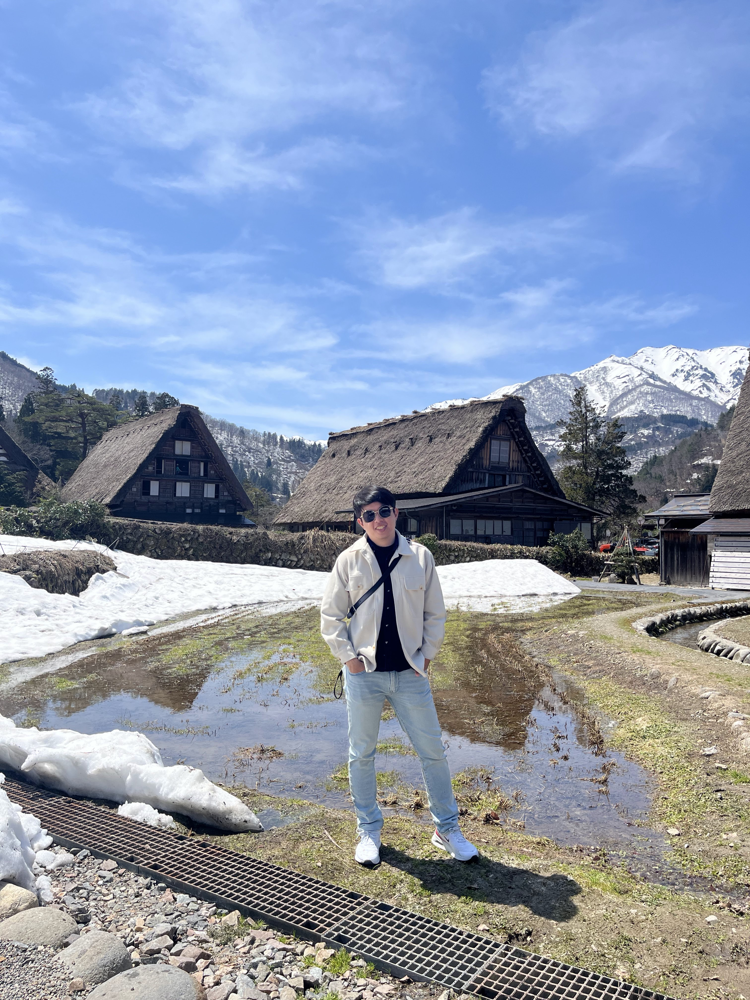

個人履歷／Profile｜郭家偉應徵工作：後端工程師、社工師 |
 |
|
基本資料
姓名：郭家偉 生日：1993/08/08 身高體重：174cm／74kg 居住地：高雄市左營區 聯絡方式
手機：0988-818-243 Email：Ga895907@gmail.com 個人專長
學歷
100/09－104/06 慈濟大學 社會工作學系（學士） 外語程度
證照／駕照
|
工作經驗109/01－114/07 社會工作師｜台北市政府衛生局
107/07－109/01 社區工作社工師｜高雄市政府社會局
101/01－103/10 工讀｜花蓮煙波大飯店 自傳性格特質 我叫郭家偉，畢業於慈濟大學社工系，先後服務於高雄市政府社會局、台北市衛生局等公部門單位。「真誠與親切待人」是我身為高雄人所具備的特質，因此我與身邊的朋友夥伴都相處得十分融洽。「正向且積極樂觀」使我遇到任何挫折，都會保持正向態度；高抗壓性讓我在面對工作挑戰與挫折時，能轉化為動力，盡力達成工作目標。 社團經歷 在學生時期積極參與學校各項公共事務，並培養運動習慣參與球隊。在社團中學習到許多做人處事的道理，也培養出隨機應變的能力；面對不同對象時，會以不同方式處理。我認為自己的優點在於，不僅對工作有強烈責任感，也習慣以高效率方式處理任務。 工作經歷 於台北市政府衛生局擔任社會工作師，主要工作內容包含精神疾病暨保護性、自殺、出監、性侵等相對人個案訪視與管理、精神疾病與藥物衛教，並經歷 COVID-19 相關重大疾病緊急業務處理及分工。 於高雄市政府社會局擔任社區工作社工師，主要工作內容有社區照顧關懷點培植、C 級巷弄長照站規劃諮詢、各式社區計畫撰寫與大型活動公文撰寫等。 雖在公部門已有 7 年工作經驗，閒暇之餘亦積極培養第二專長，報考中餐證照、領隊證照、職業駕駛執照等，並落實對科技領域程式撰寫的興趣，學習 Python 應用，持續精進多種程式語言。 |